Introduction
We are building a prototype of machine learning workflow.

Given that the IT division is promoting digital transformation, we want to create an environment for digital transformation where developers can rapidly deploy and test applications. This environment also matches a philosophy that IT division is promoting, DevOps, the philosophy of combining development and operations in a nimble lifecycle. While we are in the data warehouse team, we also ensure that the data warehouse team can leverage the new environment we created to improve their data analytics duties. Therefore, we create a workflow consists of 3 elements: an environment for rapid deployment and testing, a culture of nimble lifecycle for development and operations, and data analytics duties in data warehouse team. The workflow we build is in middle of the picture with orange color.
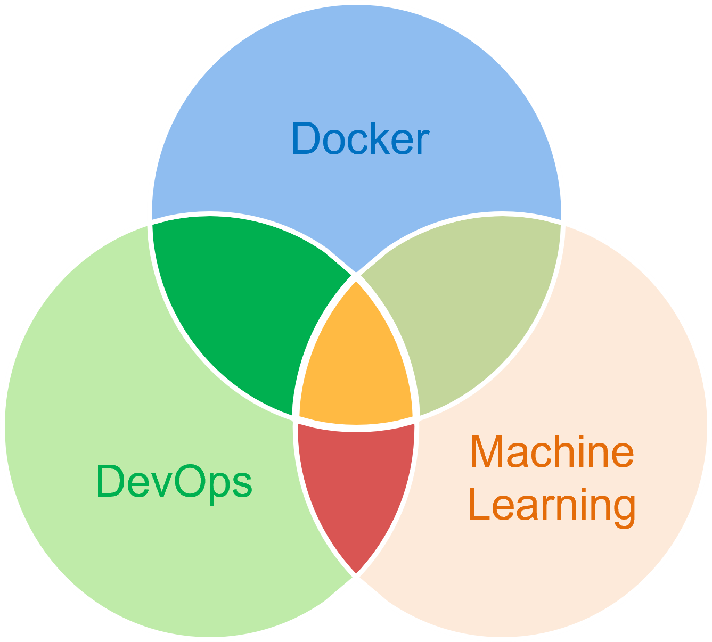
Methodology
Microservice architecture is an approach of developing software that tries to focus on building single-function modules with well-defined interfaces and operations. Microservices have many benefits for Agile and DevOps teams, it provides flexibility and scalability for developers. To illustrate, since each micro service is an independent module, developers can easily modify, update, and manage micro services without affecting others. Furthermore, developers can better allocate resources to each micro service since they are not tangled with others. Therefore, we will be adopting micro service architecture in order to build an environment where developers can rapidly build, ship and test application.
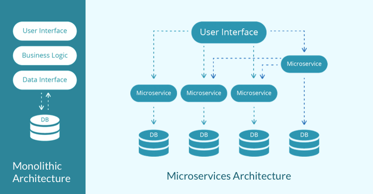
Docker will encapsulate each micro service into a container, each container is independent from another. Docker is a excellent tool for imlpementing the microservice architecture because its containerization technology enable developers to better manage, boot, and terminate each micro service. Docker will serves as a software platform, microservices will be packaged inside containers and running on Docker. We would run docker on a machine to provide services for our team members, they can access services through ip address.
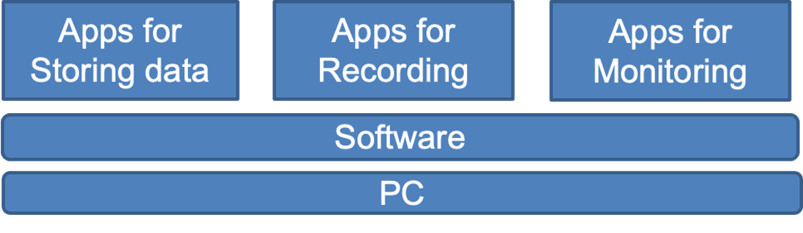
Input-Process-Output
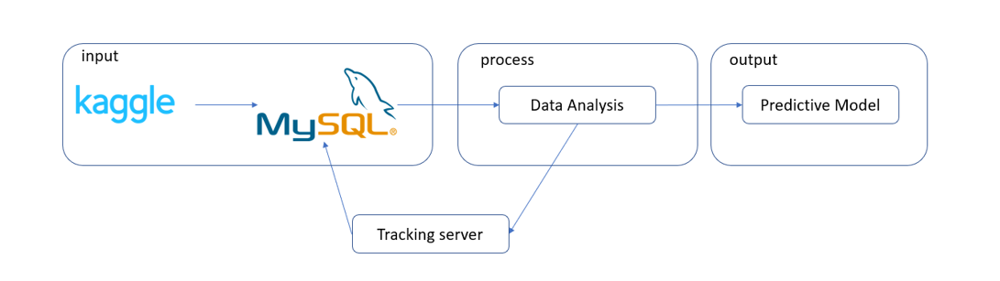A more detail structure of ML Flow tracking server.
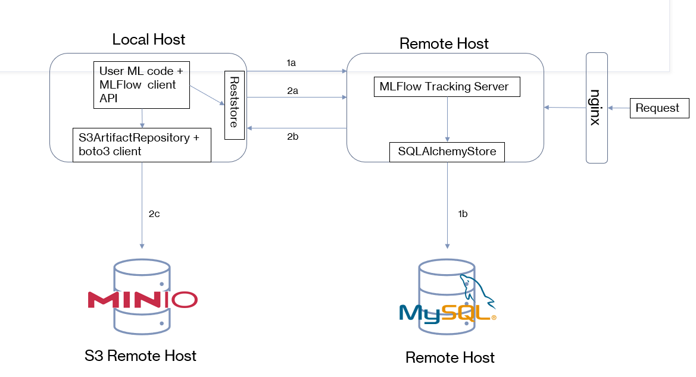The services that will be deployed using Docker throughout the project.
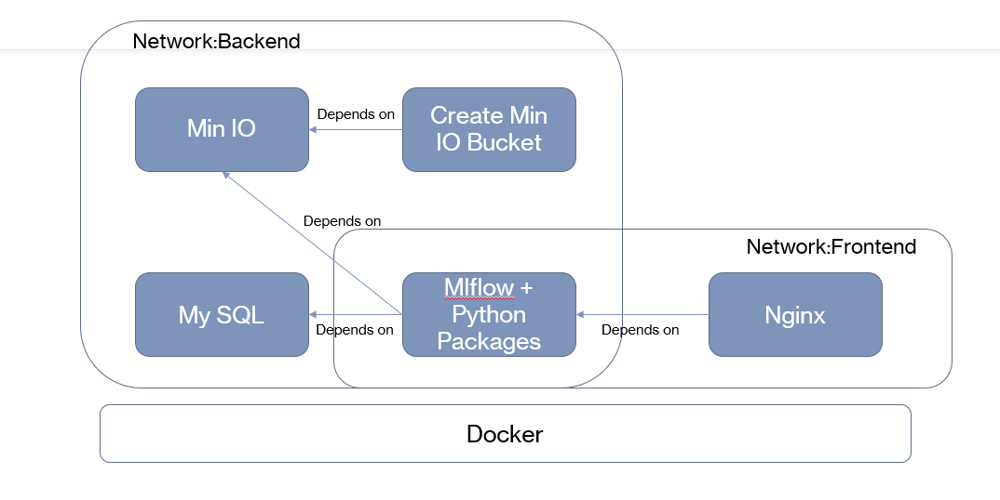
Docker Containers
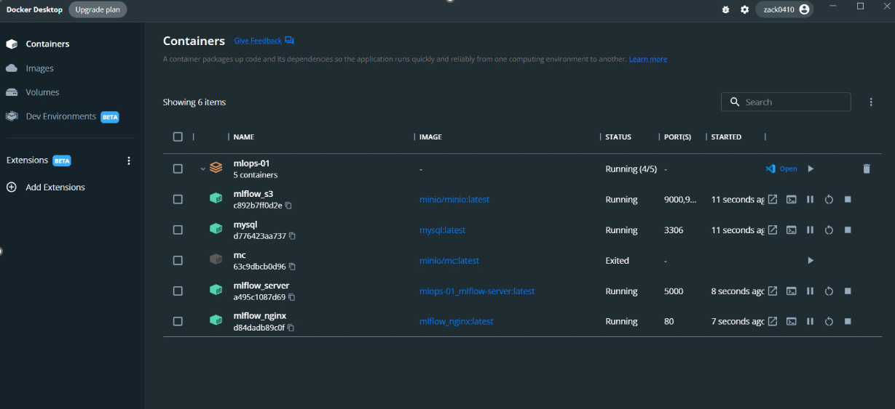
ML Flow
Ml Flow wil be used for recording and monitoring models.
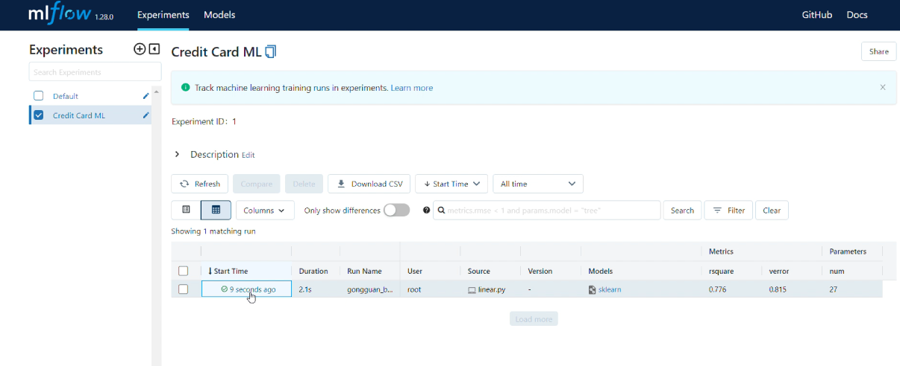
Applications
To implement our workflow, we will be using Fraud detection as the scenario for our project. The data is from Kaggle.
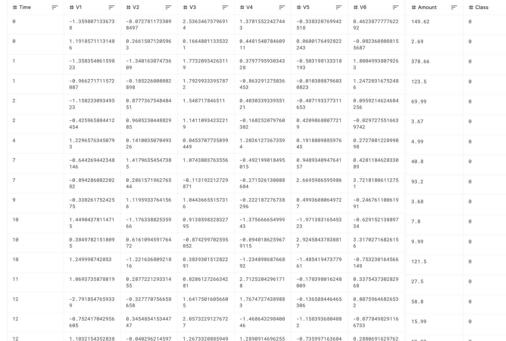
Using Logistic regression, Random Forest, and XGBoost as our models. We will trian these models and use them to detect fraud cases. Below is the screenshot that the MLFlow records the model performance while we are training models.
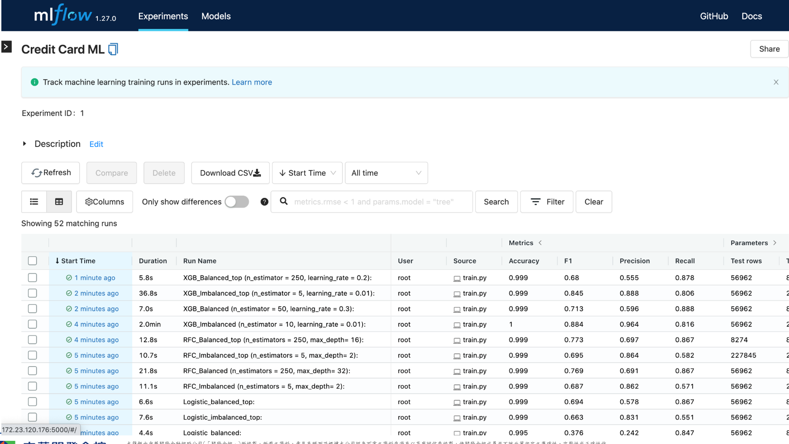
Min IO will be used for storing files. Each time we train a model, the files recording models will be stored in Min IO. We could rebuild our models with these files.
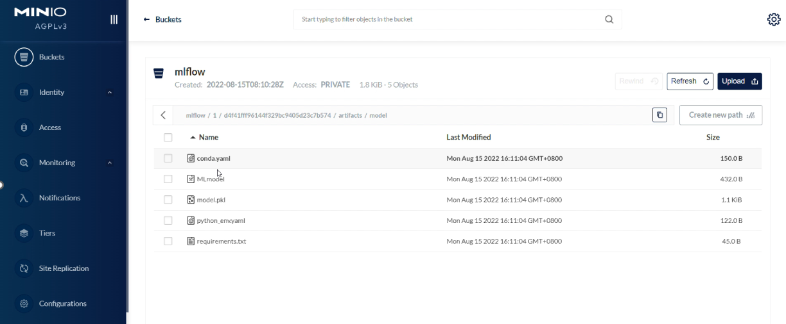
MySQL WorkBench
MySQL database will be used for storing parameters and metrics generated when we train models.
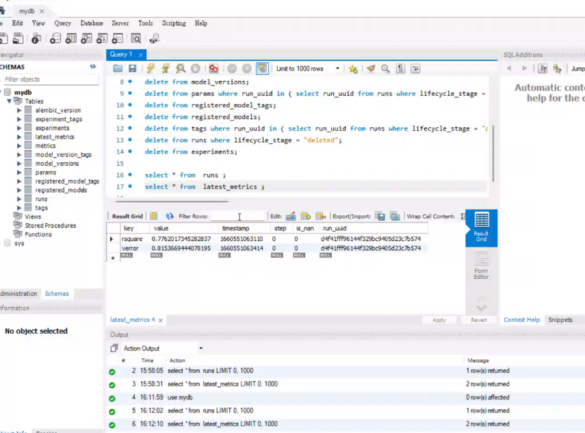
Comparison
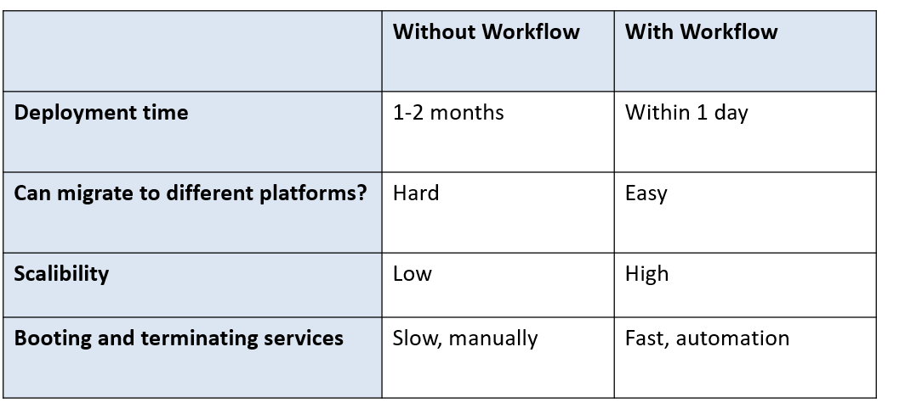
Business Value
- By leveraging this workflow, developers can rapidly deploy and ship applications across CDF and its subsidiaries. Hence, shorten the deployment time and reduce human error.
- Developers often face the problem that the things they build work on their machines, but it fail on others' machines. The workflow can ensure environmental consistency across CDF and its subsidiaries. Ensuring the applications could work on any machines and could produce the same output.
- Docker provides a lot of online resources. These resources are integrated with Docker. Developers can easily pull resources online and install them in a line of command. Moreover, developers can upload their work to docker's cloud storage for others to download. Developers in CDF can share their work to subsidiaries through cloud platform.